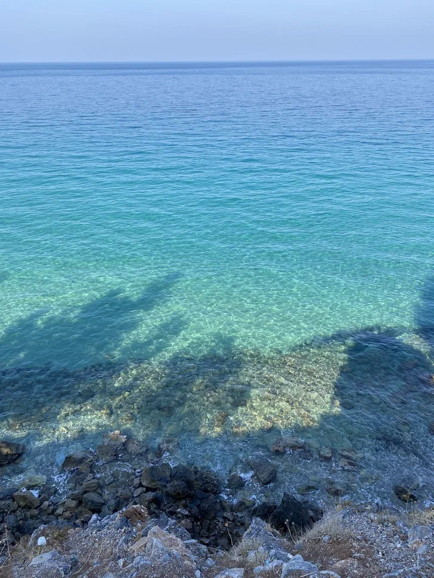
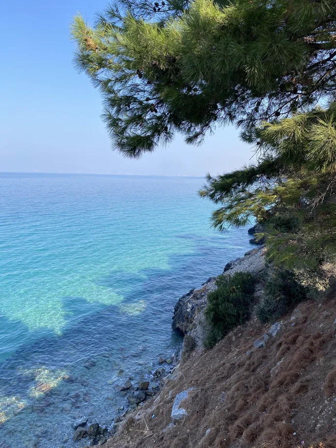

Turkish Natura
Национальный заповедник Дилек
Национальный заповедник Дилек, коротко называют Милли Парк, въезд в него находится недалеко
от городка Гюджкамели.
Заповедик составляет горная гряда с множеством троп для любителей
Mountain Bike и Hiking.

Вид с высоты на Milli Park


Красивое море в Milli Park
Плюсы поездки в Милли Парк
- Чистейший воздух
- Красивейшая природа
- Множество киллометров тропинок и дорог для прогулок
- Чистое море с прекрасными песочными пляжами
Минусы поездки в Милли Парк
- Инфраструктура (транспорт, кафе/рестораны и т.д.).
- Платный вход/въезд.
MILLI PARK